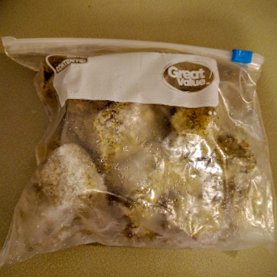

Roberto Cases's Recipes

Sofrito
Kitchenware:
- Blender or Food Processor
- Oven
- Baking sheet lined with aluminum foil
- Ice Cube Trays
Ingredients:
| Garlic | 1 whole head |
| Olive Oil | 1-2 tablespoons |
| Mini Sweet Peppers | 15 ct |
| Large sweet/Vidalia Onion | 1 ct |
| Fresh Cilantro | 1 bunch |
| Pimento Stuff Olives | ¼ cup |
| Capers | 1 tablespoon |
| Oregano | 2 tablespoons |
| Olive oil | ½ cup |
Preheat the oven to 350. Cut off the top of the head of garlic, enough to expose the tops of the cloves contained therein. Use a piece of aluminum foil big enough wrap up the head of garlic and create a bowl for the garlic. Place the garlic in said bowl and pour enough of the olive oil to cover the exposed cloves and soak down into the head. Seal the aluminum foil into a nice little cocoon or tent. Seed and cut the mini peppers in half. Cut the onion into about 8 wedges. Place the garlic, peppers, and onion onto the baking sheet. Drizzle the rest of the tablespoon or so of olive oil over the peppers and onion. Toss them to ensure even coverage of olive oil on the veggies
Once the oven is preheated, place the baking sheet on the middle rack; and set your timer for 35 minutes.
While the veggies are baking, you can roughly chop the cilantro and measure out the olives, capers, oregano, and olive oil.
After 35 minutes, the veggies should be cooked through with maybe some burnt edges. And the garlic should look golden and soft. Turn off the oven and allow them to cool about 20 minutes. Remove the garlic from their cloves once they've cooled.
If you're using a full size blender, you can blend all the ingredients. If you're using a smaller blender or food processor, you'll have to blend/process in steps.
Now you should have a lot of sofrito. You can store it in containers and refridgerate, but that might only last about week. What I recommend is to spoon your freshly made sofrito into ice cube trays (heaping tablespoons is about what fits in each slot). It should fill about 2 trays. Stick those trays in the freezer. And once the sofrito is frozen you can pop them into freezer bags to reclaim your ice cube trays to use again.
This is a lot of work for a bit of seasoning, but it adds so much flavor! And these batches last me 2 to 3 months on average. And I don't just add it to beans. I've added sofrito to rice to great effect as well. Experiment with it. Feel free to add or subtract to/from the ingredients based on what you think might be tasty. The main effect is have an easy flavor bomb on hand so you have less prep work in the future!